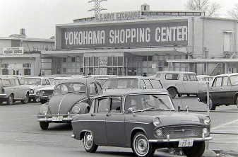
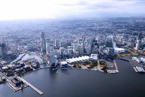
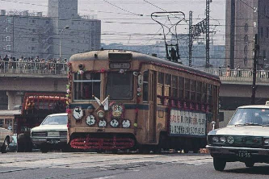
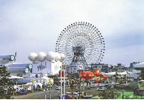
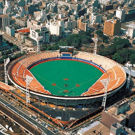

第一回
☆インタビューの資料☆
－質問－
1.昔の横浜と今の横浜での生活はどのように変化しましたか？
2.都市開発が進む横浜で特に便利になった点を教えてください。
3.横浜市電気鉄道の閉業について、どう思いましたか？また、どのくらいの頻度で利用していましたか？
4.横浜博覧会はどのようなイベントでしたか？思い出などあれば教えてください。
5.1997年に横浜スタジアムが建設された当時の街の雰囲気を教えてください。
－資料－




